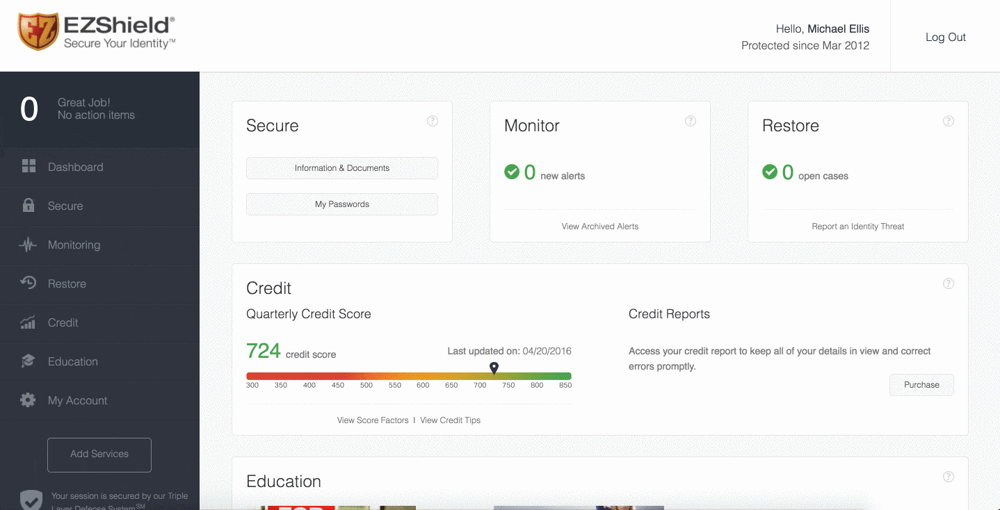

Before

Roles Performed: Lead Designer, Front-end Developer
The one property that I have been most engaged with over the last few years is the EZShield dashboard. EZShield is a large player in the identity and fraud protection space and this dashboard is how our users manage their personally identifiable information. After years of development the interface had grown outdated and the integration of more and more services created an overly complex experience.
Before
Beyond causing confusion, there were two very big issues we could no longer afford to ignore. First, it wasn't responsive and we were seeing an uptick in our user base trying to access their dashboard on mobile and tablet. It was usable, but no one wants to pinch and zoom and we didn't like forcing them to. Secondly, with all the additions we were throwing onto the site, performance had taken a major hit. At one point, the mean page load time was nearly 20 seconds. Yikes!
After
Starting with the design, we took everything into consideration and nothing was off limits. One of the major complaints we heard often was that after logging in, users didn't know what they should do first. When everything was calling for attention it was just noise instead of a useful experience. There was just way too much going on. Unnecessary text, icons, colors, etc. So, we toned it down and gave the dashboard a focus.
As an intentional side effect of redeveloping the dashboard, and focusing on performance improvements, we dropped the number of images needed to create the interface from over a hundred to around a dozen or so. Allowing the browser to render the design via CSS is so much more performant than making a hundred extra requests.